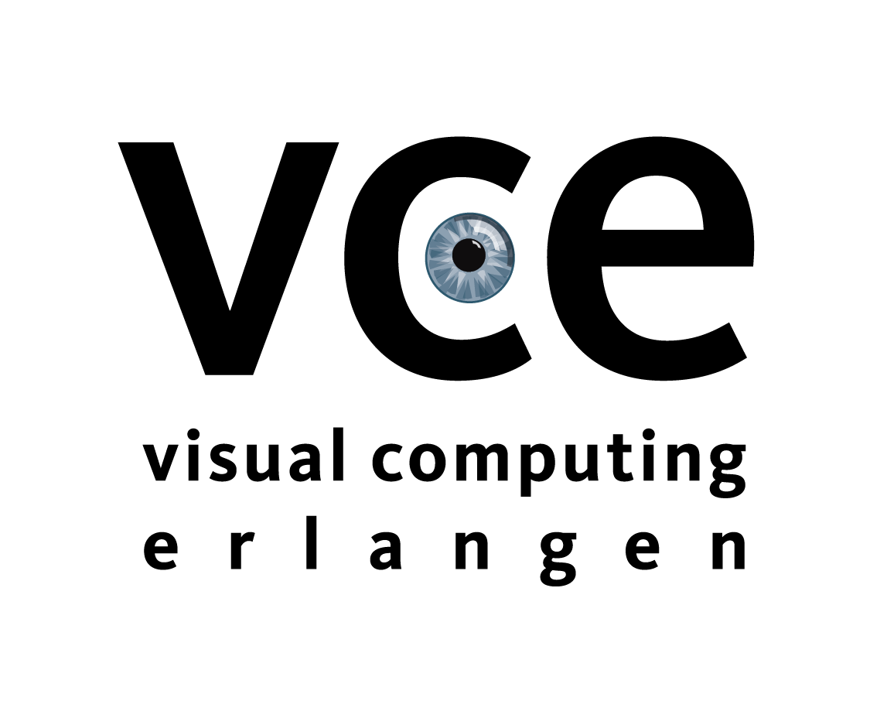

Lukas Meyer, Andrei‑Timotei Ardelean, Tim Weyrich, Marc Stamminger
Visual Computing Erlangen, Friedrich‑Alexander‑Universität Erlangen‑Nürnberg‑Fürth, Germany
We introduce FruitNeRF++, a novel fruit-counting approach that combines contrastive learning with neural radiance fields to count fruits from unstructured input photographs of orchards. Our work is based on FruitNeRF, which employs a neural semantic field combined with a fruit-specific clustering approach. The requirement for adaptation for each fruit type limits the applicability of the method and makes it difficult to use in practice.
To lift this limitation, we design a shape-agnostic multi-fruit counting framework that complements the RGB and semantic data with instance masks predicted by a vision foundation model. The masks are used to encode the identity of each fruit as instance embeddings into a neural instance field. By volumetrically sampling the neural fields, we extract a point cloud embedded with the instance features, which can be clustered in a fruit-agnostic manner to obtain the fruit count.
We evaluate our approach using a synthetic dataset containing apples, plums, lemons, pears, peaches, and mangoes, as well as a real-world benchmark apple dataset. Our results demonstrate that FruitNeRF++ is easier to control and compares favorably to other state-of-the-art methods.
For the messy room dataset, the extracted semantic point cloud is shown on the left. In the middle, the clustered point cloud (Euclidean + cosine distances) is visualized — 99 objects detected. On the right, clustering using only Euclidean distance — 65 objects.
This project is funded by the 5G innovation program of the German Federal Ministry for Digital and Transport under the funding code 165GU103B and the European Union’s Horizon 2020 research and innovation program under the Marie Skłodowska‑Curie grant agreement No 956585.
The authors gratefully acknowledge the scientific support and HPC resources provided by the Erlangen National High Performance Computing Center (NHR@FAU) of the Friedrich‑Alexander‑Universität Erlangen‑Nürnberg (FAU).
The hardware is funded by the German Research Foundation (DFG).
We extend our gratitude to Adam Kalisz for his unique Blender skills and Jann‑Ole Henningson for proof‑reading our script.
@inproceedings{fruitnerfpp2025,
author = {Lukas Meyer, Andrei-Timotei Ardelean, Tim Weyrich, Marc Stamminger},
title = {FruitNeRF++: A Generalized Multi-Fruit Counting Method Utilizing Contrastive Learning and Neural Radiance Fields},
booktitle={2025 IEEE/RSJ International Conference on Intelligent Robots and Systems (IROS)},
volume={},
number={},
year = {2025},
}